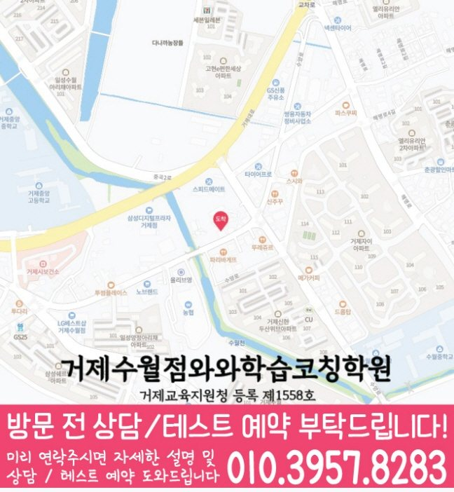

이전 단원의 개념 공백을 먼저 찾고, 현재 학교 진도와 연결되는 부분부터 다시 정리합니다.
☁️ 경상 거제시 수월동 학습관리 안내
수월동 학원 선택 안내
수월동에서 안내하는 지점은 거제수월점입니다. 이용할 지점과 과목별 안내 학년을 확인하고, 방문 조건과 학습 점검 방법을 비교해 보세요.
경상
거제시
영어·수학·국어
초등·중등·고등
수월동에서 확인할 거제수월점 수강·위치 정보
최근 교재와 직접 푼 답안, 일주일 동안 실제로 완료한 과제를 준비하세요. 이해한 내용과 다시 도움받을 내용을 나누어 설명하고, 다음 공부의 단원·분량·재확인 날짜를 어떻게 정할지 질문하세요.
- 주소
- 경남 거제시 수양로 462 3층
- 찾아오는 길
- 수월사거리 파리바게트 맞은편 skT월드 건물 3층
- 시작 시간 참고
- 평일 오후 12시 이후
- 주말 안내
- 토요일만 가능. 참고 시간: 토 1~5시 고등수학.
| 과목 | 안내 학년 | 학년별 수강 안내 |
|---|---|---|
| 국어 | 개설 학년 문의 | 국어 안내 학년 확인 |
| 영어 | 초5~고2 | 초등 영어 안내중등 영어 안내고등 영어 안내 |
| 수학 | 초5~고2 | 초등 수학 안내중등 수학 안내고등 수학 안내 |
| 과학 | 개설 학년 문의 | 과학 안내 학년 확인 |
| 사회 | 개설 학년 문의 | 사회 안내 학년 확인 |
안내 학년과 현재 모집 가능 여부는 구분해서 확인하세요. 실제 요일·시작과 종료 시각·교재·수업 횟수·비용은 희망 과목과 학년을 정해 상담에서 확인할 수 있습니다.
홈페이지 상담 연락처: 010-6839-8283. 방문 전에는 이 페이지의 주소와 희망 과목·학년을 함께 확인해 주세요.

이미지를 누르면 확대할 수 있습니다. 원본 크기로 전환해 작은 글씨와 전체 내용을 읽어 보세요.

이미지를 누르면 확대할 수 있습니다. 원본 크기로 전환해 작은 글씨와 전체 내용을 읽어 보세요.
찾아오시는 길
와와학습코칭센터 거제수월점의 위치와 주변 교통편을 확인하세요.
- 주소
- 경남 거제시 수양로 462 3층
주변 정류장
- 수월삼거리
- 두산위브APT
- 수월삼거리
- 신현농협하나로마트수양점
- 두산위브APT
- 거제자동차학원
- 거제자동차학원
주변 버스
- 순환
- 100(백병원-수월-백병원) · 100-1(백병원-수양-백병원) · 101(백병원-수월-백병원수월순환) · 102(터미널-수월-거붕백병원) · 120(삼성기숙사-삼성기숙사) · 130(고현-아이파크1차) · 131(고현-고현) · 131(터미널-삼성기숙사) · 131-1(터미널-터미널양정순환) · 132-4(터미널-교육청-터미널교육청순환) · 133(고현-푸르지오-고현) · 통학 2-4(고현-벽산A-고현)(거제시해수보양온천앞보건소) · 통학4(터미널-문동-신현교) · 통학5(삼성기숙사-문동-터미널) · 통학9-1(고현-아주동-고현) · 104(터미널-백병원) · 120-2(삼성기숙사-삼성기숙사) · 130(고현-고현양정순환) · 130(고현-백병원) · 130(고현-삼거리) · 130-2(터미널-상문고-터미널) · 통학 2-4(고현-벽산A-고현) · 통학2(터미널-문동-터미널)(계룡중학교) · 통학2(터미널-문동-터미널)(신성) · 통학3(터미널-문동-터미널) · 102(터미널-덕산아내) · 103(터미널-삼성기숙사) · 120(덕산아내-포스코-덕산아내) · 120(삼성기숙사-터미널-수창APT) · 120(수창APT-포스코-삼성기숙사) · 120-1(덕산아내-수양-덕산아내) · 통학6(옥포고-터미널) · 통학9(능포-아주,옥포,연초-터미널) · 100(두산위브-수월-백병원) · 130(고현-계룡중)
- 일반
- 10(고현-능포) · 10-3(고현-능포) · 14-1(고현-대우병원) · 16-1(고현-아주동-고현) · 16-3(고현-고현) · 16-3(고현-아주,옥포-고현) · 20(고현-옥림) · 20-2(고현-옥화선착장) · 22(고현-구조라) · 22-1(고현-구조라) · 24-2(고현-망치) · 25-1(고현-수월-망치) · 25-3(터미널-수월,마전,구조라-망치) · 30-1(고현-구영-고현) · 30-2(고현-고현) · 31-1(고현-상유-고현) · 32(고현-고현) · 32(고현-대계마을-고현) · 32(고현-외포-능포) · 32-1(고현-거제경찰서-능포) · 32-1(고현-능포) · 32-2(고현-외포-능포) · 33(고현-고현) · 33(고현-능포) · 33(고현-마전동-능포) · 33(고현-옥포시내-고현) · 33-2(고현-외포-능포) · 34(고현-능포) · 35(고현-고현) · 35(고현-칠천도-고현) · 35-1(터미널-칠천도-터미널) · 35-1(터미널-터미널) · 37(고현-하청-고현) · 37-2(고현-한내시온A-고현) · 38(고현-명동,수월-고현) · 38(고현-소오비마을-고현) · 38(고현-율천마을-고현) · 39(고현-이목-고현) · 10(능포-고현) · 12-1(능포-고현) · 14-1(대우병원-고현) · 20-1(옥림-터미널) · 20-2(옥화선창-터미널) · 22(구조라-고현) · 24-1(양화-고현) · 25-1(망치-수월-고현) · 30-1(상유-고현) · 31-1(구영-고현) · 32(능포-마전동-고현) · 32(능포-장승포수협-고현) · 32-1(능포-마전동-고현) · 32-1(능포-장승포수협-고현) · 33(능포-마전동-고현) · 33(능포-장승포수협-고현) · 33-1(능포-고현) · 33-2(능포-외포-고현) · 36(고현-하청-고현) · 36-2(고현-한내시온A-고현)
교통편 확인 . 버스 운행과 정차 위치는 이용 전에 확인해 주세요.
Parent Guide
수월동에서 학원을 찾기 전, 먼저 아이의 공부 흐름을 살펴보세요.
수월동 전문학원을 알아보는 학부모님이라면 “진도가 빠른 학원이 좋은지”, “숙제를 많이 내주는 곳이 좋은지”, “우리 아이에게 맞는 관리가 가능한지”가 가장 궁금할 수 있습니다. 하지만 실제 상담에서는 속도보다 현재 아이가 어디에서 막히는지 확인하는 과정이 더 중요합니다.
경상 거제시 수월동 학생은 학교 진도, 과목별 자신감, 과제 습관, 시험 준비 시기가 모두 다를 수 있습니다. 그래서 상담에서는 성적표 한 장만 보고 판단하기보다 최근 교재, 오답 유형, 수업 태도, 플래너 실행 여부를 함께 살펴보며 학습 방향을 정리합니다.
수월초, 제산초, 수월중, 거제중앙중, 거제중앙고, 연초고 등 주변 학교의 진도와 시험 준비 흐름을 상담 때 함께 확인합니다.
무작정 오래 앉아 있는 방식이 아니라 과목별 복습 순서와 오답 정리 기준을 잡아줍니다.
하루 계획을 작게 쪼개고 완료 경험을 쌓으면서 공부 루틴이 무너지지 않도록 확인합니다.
Grade Coaching
수월동 학년별 상담 자료와 공부 점검 기준
같은 수월동 학생이라도 초등·중등·고등 단계에 따라 필요한 관리가 달라집니다. 학년별 목표를 분리해서 봐야 상담 방향도 더 선명해집니다.
기본 개념, 연산 정확도, 어휘 이해, 문제를 끝까지 읽는 습관을 먼저 다집니다. 공부 시간이 길지 않아도 매일 이어지는 작은 루틴을 만드는 데 초점을 둡니다.
학교별 시험 범위와 교과서 흐름을 기준으로 내신 대비를 진행합니다. 단원별 오답 원인을 정리하고 서술형·응용 문제에서 실수가 반복되지 않도록 관리합니다.
내신과 모의고사 준비를 함께 보며, 부족한 개념과 시간 관리 문제를 나눠 점검합니다. 과목별 우선순위를 정해 시험 기간 계획이 흐트러지지 않도록 돕습니다.
Recommended
수월동에서 이런 학생이라면 상담을 권합니다.
개념은 아는 것 같은데 문제만 풀면 틀리는 학생조건 해석, 풀이 순서, 계산 실수처럼 점수가 빠지는 지점을 따로 확인합니다.
숙제는 하지만 성적 변화가 약한 학생완료 여부만 보지 않고 복습 밀도, 오답 재확인, 시험 전 반복 횟수를 함께 점검합니다.
학부모가 공부 상황을 알기 어려운 학생수업 후 어떤 부분을 했고 무엇이 남았는지 상담과 피드백으로 확인할 수 있게 정리합니다.
학원 선택
수강 조건과 학습 도움을 나누어 비교하기
| 비교할 항목 | 가져갈 자료 | 상담에서 확인할 질문 |
|---|---|---|
| 수강 대상 | 재학 학년과 희망 과목 | 안내 학년에 해당하는지, 현재 선택할 수 있는 과정은 무엇인지 확인합니다. |
| 등원 가능 시간 | 학교 종료 시각과 이동에 필요한 시간 | 실제 수업 시작·종료 시각이 등원 가능한 시간과 맞는지 묻습니다. |
| 학습 도움 | 최근 시험지와 풀이가 남은 교재 | 모르는 개념과 혼자 적용하지 못한 문제를 어떻게 구분해 살펴보는지 묻습니다. |
| 비용과 이용 조건 | 희망 횟수·과목·수업 시간 | 교습비 자료의 기준과 교재·추가 프로그램 포함 여부를 구분해 확인합니다. |
조건을 비교할 때는 같은 학년·과목·주당 횟수를 기준으로 기록하세요. 수업 시간이 다르면 월 금액만으로 비용을 비교하기 어렵습니다.
상담 뒤 확인
수월동 상담 내용을 다음 공부에 연결하기
상담 뒤에는 실제 수강 조건과 집에서 먼저 해 볼 일을 따로 적으세요. 아직 확인하지 못한 항목은 빈칸으로 남기고 방문 전에 다시 문의하면 됩니다.
학교 자료는 재학 학교에서 받은 시험 범위·진도표·교재를 준비하세요. 학교 이름만으로 별도 반이나 특정 출제 방식이 운영된다고 판단하지 않습니다.
Detail Pages
수월동 상세 학습 페이지
동네 기본 안내를 확인한 뒤, 필요한 과목 조합에 맞춰 더 구체적인 상담 기준을 확인할 수 있습니다.
Target Schools
수월동 주변 학교 자료를 상담에 활용하는 방법
수월동 주변 학생들이 상담 전 확인하기 쉽도록, 현재 정리된 학교 목록을 학년 단계별로 나누어 담았습니다.
수월초
제산초
수월중
거제중앙중
거제중앙고
연초고
상문고
학교별 교과 진도, 시험 범위, 수행평가 준비 상황은 학생마다 다르기 때문에 상담 시 현재 교재와 최근 평가지를 함께 확인하면 더 정확한 학습 계획을 세울 수 있습니다.
학교 목록은 상담 준비를 위한 지역 참고 정보입니다. 특정 학교와의 제휴나 별도 반 개설을 의미하지 않습니다. 학생이 학교에서 받은 실제 진도표·평가 안내·사용 교재를 가져와 수업에서 확인할 범위와 집에서 복습할 범위를 나누어 질문하세요.
Checklist
수월동 전문학원 상담 전 체크리스트
상담에 가져올 학교 자료: 수월초·제산초와 학생이 가져온 실제 진도표·시험 범위
현재 사용하는 교재와 최근 시험지, 다시 풀어볼 오답
시험 범위를 늦게 확인해 과목별 복습 일정이 자주 밀리는 경우에 해당하는지 보여주는 최근 학습 기록
플래너의 교재·단원·분량·완료 표시와 실제 실행 결과
FAQ
자주 묻는 질문
수월동 전문학원을 알아볼 때 학부모는 어떤 학습 변화를 확인하면 좋나요?
결과를 미리 단정하기보다 질문 빈도, 과제 시작 시점, 플래너 완료 기록, 오답 재풀이처럼 실제로 관찰할 수 있는 행동을 확인하는 것이 좋습니다. 수월동 전문학원 상담에서는 학생의 학교 진도와 현재 학습 습관을 함께 확인해 안내합니다.
수월동 전문학원을 알아볼 때 학교 진도와 학습 계획은 어떻게 맞추나요?
학생이 가져온 실제 진도표와 시험 범위를 현재 교재에 대조한 뒤 복습, 오답 재풀이, 다음 진도의 순서를 정합니다. 확인되지 않은 일정은 임의로 가정하지 않습니다. 수월동 학생의 상황에 따라 세부 안내는 상담 시 조정될 수 있습니다.
수월동 전문학원에서 오답은 어떻게 다시 관리하면 좋나요?
틀린 문제를 개념 공백, 적용 순서, 계산·표현 실수로 나누고 일정 시간이 지난 뒤 다시 풀어보는 기록까지 확인하는 것이 좋습니다. 수월동의 세부 적용 범위는 학생이 가져온 학교 진도와 최근 학습 기록을 확인한 뒤 정합니다.
수월동 전문학원을 알아볼 때 현재 학년에서 가장 먼저 확인할 공부 습관은 무엇인가요?
현재 교재와 학교 진도를 스스로 설명할 수 있는지, 정해진 분량을 끝냈는지, 틀린 문제를 다시 확인했는지를 우선 살펴봅니다. 수월동의 세부 적용 범위는 학생이 가져온 학교 진도와 최근 학습 기록을 확인한 뒤 정합니다.
수월동 전문학원을 알아볼 때 두 과목을 함께 공부할 때 우선순위는 어떻게 정하나요?
최근 시험지와 학교 진도, 누적 과제, 반복 오답을 과목별로 나눈 뒤 시험 범위와 남은 기간에 맞춰 먼저 보완할 단계를 정합니다. 수월동의 세부 적용 범위는 학생이 가져온 학교 진도와 최근 학습 기록을 확인한 뒤 정합니다.
상담 참고
수월동 상담 시 확인할 학습 변화
수월초·제산초와 현재 교재를 함께 보면 국어·영어·수학에서 학교 진도와 개인 복습이 어긋난 지점을 구분하기 쉽습니다.
수월동 전문학원 안내는 성적 결과를 미리 약속하지 않습니다. 질문 빈도, 과제 착수, 오답 재풀이처럼 관찰 가능한 학습 행동을 상담에서 확인합니다.
수월동 전문학원 상담에서는 틀린 문제를 개념 공백, 적용 순서, 계산·표현 실수로 나누어 기록해 같은 실수가 반복되는 이유를 확인합니다.
거제수월점 지점 사진